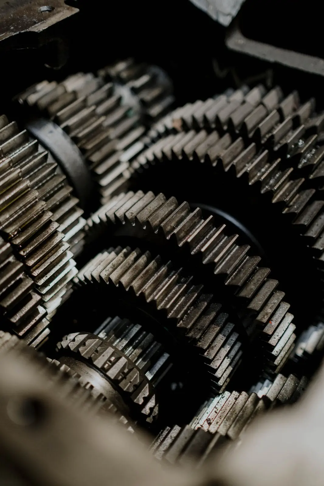

Diagnosis first
We run a complete transmission diagnosis with the most up-to-date diagnostic equipment, electrical and mechanical, so we fix the real problem and not a guess.
Locally owned since 1976. We find out what's wrong with up-to-date diagnostic equipment, then repair, rebuild or replace your transmission and get you back on the road quickly.

Most transmission problems start small and get worse over time, so getting it looked at early can save you money. We tell you honestly what it needs, and a transmission only comes out of your vehicle when it really has to.
Our transmissions come with a nationwide warranty. We're a member shop of ATRA, the Automatic Transmission Rebuilders Association.
Transmissions first, but we look after the whole vehicle, any make or model.
We're a Hercules tire dealer, but we can order any make of tire to suit your vehicle and the way you drive. Call and ask what we can get in for you.
As members of the Automatic Transmission Rebuilders Association, we follow ATRA's Code of Ethics on every job.
We run a complete transmission diagnosis with the most up-to-date diagnostic equipment, electrical and mechanical, so we fix the real problem and not a guess.

We tell you what we found and what it needs. Under ATRA's code, we only say a transmission has to come out when that's really the case.

Rebuilds are done by our ATRA-certified rebuilders to the Association's rebuilding standards. Blair, our head rebuilder, has been doing it here since 1982.
Our transmissions carry a nationwide warranty. If you're travelling, ATRA member shops across the country can help you out.
Journeyman technicians and certified rebuilders, several of them with us for decades.
Owned and run by Kirby Baumung, an ATRA certified transmission rebuilder, and Sherry Baumung, who runs the office.
Founded the business.
Head rebuilder, here since October 1982.
Shop supervisor. Got his papers here.
Apprenticed here, Journeyman since 2014.
8 years at a Chev/GMC dealership first.
Front ends, suspensions, brakes, alignments.
Our newly expanded facility handles the smallest job on your small car and the biggest job on your 3-ton truck, for Brandon and the surrounding communities.
Absolutely great customer service today! Our 2010 F150 needed some attention. Diagnostics performed and a solution was performed. Options were provided for other items that were noted during their detailed inspection and were completely left at our discretion whether to proceed or not. When we arrived to pick the vehicle up it was running and warm. Thank you Kirby and staff.
2127 Lyndale Drive, 18th Street South
Brandon, MB R7A 7K9
Tel 204-725-1313 · Fax 204-727-4789 · lyons.trans@mts.net
| Monday | 8–12, 1–5 |
| Tuesday | 8–12, 1–5 |
| Wednesday | 8–12, 1–5 |
| Thursday | 8–12, 1–5 |
| Friday | 8–12, 1–5 |
| Saturday | Closed |
| Sunday | Closed |